How “standard” products, spaces and systems leave women behind.
Tanya Prasad, Product Designer
International Conference on Women15 November 2026
01 / 23
Introduction
One size does not fit all.
Hello, everyone!
First of all, a huge round of applause for the organising team. Thank you so much for inviting me and giving me this opportunity.
Hi, everyone. I'm Tanya Prasad, a product designer with IBM.
Today, I'm here to talk about a very invisible topic.
I'm here to explore how female inclusivity has become almost invisible in design, and how standard products, often leaving women behind.
So, let's start with perhaps the simplest problem we encounter in our everyday lives. Something almost everyone in this room has with them right now.
Any guesses?
A mobile phone!
How many of you have ever had just one request when buying a phone?
Find me a phone that actually fits my hand!
Mobiles Size
When a phone does not fit the hand it is designed for.
Screen size has become a design priority.
Many women have smaller hands on average.[1]
Limited pockets mean phones are carried differently too.
[1] Boyle, Boyle & Booker (2015), Pianist Hand Spans; https://www.ncbi.nlm.nih.gov/pubmed/5550584
02 / 24
Clothing and Fashion: Pockets
What looks like a detail can change how women move through the world.
Women’s clothing frequently has shallow, fake or no pockets.
Men’s pockets are often sized for practical objects such as a phone.
Fashion design creates an everyday dependence on bags.
03 / 2404 / 26
Toilets Layout
Equal floor space is not equal access.
Urinals allow more men to use the same area at once.[1]
Women can take up to 2.3 times as long to use a toilet.[1][2]
Care work, periods and accessibility shape the queue.[1][2]
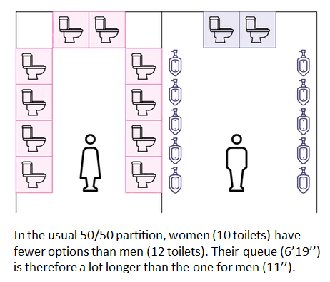
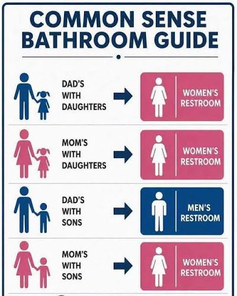
[1] Banks (1991), “Toilets as a Feminist Issue,” Berkeley Women’s Law Journal 6(2), 263-289. [2] Greed (2014), “Global gendered toilet provision,” AAG Annual Conference.
03 / 24
Infrastructure: Parking
Needs become visible when people with those needs are present.
Pregnancy parking was added at Google after Sheryl Sandberg, then Vice President of Global Online Sales and Operations, experienced the distance herself.
Accessibility is often treated as an exception until someone names the barrier.
12 / 23
Infrastructure: Glass Staircase
Design should not make privacy optional.
Glass stairs and floors can compromise privacy for people wearing skirts.
What feels visually striking to some can make others change how they move through a space.
Design always communicates who belongs.
14 / 25
Infrastructure: Office Temperature
Comfort standards were set around male metabolism.
Office-temperature formulas were developed around an average 40-year-old, 70 kg man.[1][2]
Women’s metabolic rates during light office work are lower on average.[1]
“Too cold” is a design-data problem, not oversensitivity.
Shorter drivers sit further forward to reach pedals and see over the dashboard.[1]
That seating position changes injury risk.[1]
Car interiors were historically calibrated around a male default.[1]
[1] Gendered Innovations, “Crash” case study: http://genderedinnovations.stanford.edu/case-studies/crash.html#tabs-2
05 / 24
Automobiles: Seatbelts
Pregnancy and breasts should be design requirements, not exceptions.
Standard belts can fit pregnant bodies poorly.[1]
The lap belt should sit low across the hips, beneath the abdomen.[1]
Some women reposition belts around breasts, which can compromise protection.[1][2]
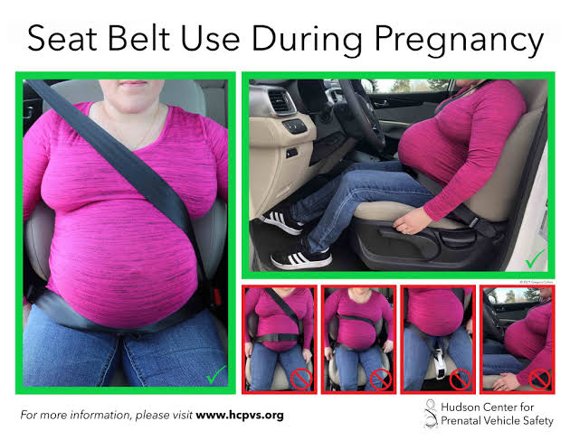
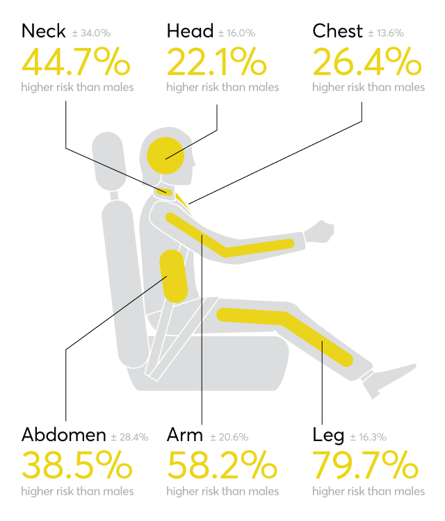
[1] Gendered Innovations, “Crash” case study: http://genderedinnovations.stanford.edu/case-studies/crash.html#tabs-2 [2] Washington Post (2012), “Female dummy makes her mark on male-dominated crash tests.”
06 / 24
Automobiles: Motion Sickness and Crash Tests
A female crash dummy is not a scaled-down man.
Car design may contribute to women’s greater motion-sickness risk.
Women are 73% more likely to be injured in a head-on collision and 17% more likely to be killed as drivers or front-seat passengers.[1][2]
The five-star test long used a 5 ft 9 in, 171 lb male dummy, first developed in 1978.[1]
The available “female” dummy represents only the smallest 5% of US women: 4 ft 11 in and 108 lb.[1]
By 2027 or 2028, THOR-05F will be required: a female dummy with 150+ sensors for the brain, thorax, abdomen, pelvis and lower legs.
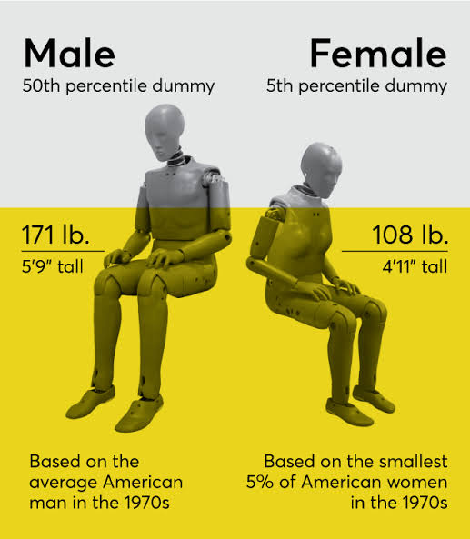
[1] Gendered Innovations, “Crash”: http://genderedinnovations.stanford.edu/case-studies/crash.html#tabs-2 [2] Linder & Svedberg (2018), Road Safety on Five Continents.
07 / 24
Media and Movies: Sexy Lamp Test
Can she be replaced by a decorative object?
Coined by comic-book writer Kelly Sue DeConnick, the test asks whether a female character has genuine agency and plot relevance.
If replacing her with a “sexy lamp” leaves the story, conflict and plot unchanged, she fails the test.
It exposes characters written as decoration, a prize, a romantic reward or a silent prop for a male protagonist.
Characters who fail lack their own goals, fears, motivations or actions independent of the main hero.
08 / 24
Female Bags and Shoes
Accessories compensate for design exclusions.
Small or absent pockets make handbags a necessity, not simply a preference.
Footwear and bags are often judged by appearance before function or ergonomics.
Who has to carry the workaround?
09 / 24
AI and Tech: Data and Recruitment
Algorithms inherit the data they are fed.
Historical data often encodes historical gender bias.[1]
AI can reproduce and amplify that bias.[1]
Automated recruitment can reward patterns of past exclusion.
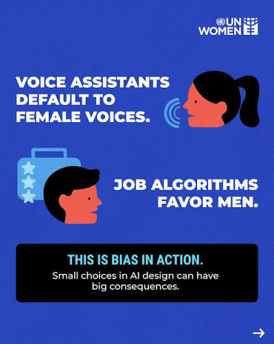
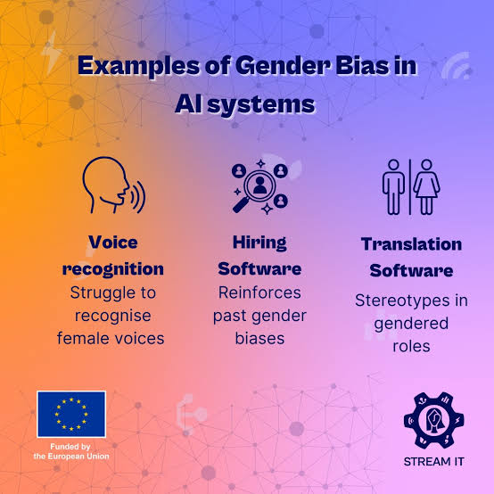
[1] Wired, “Machines taught by photos learn a sexist view of women”: https://www.wired.com/story/machines-taught-by-photos-learn-a-sexist-view-of-women
10 / 24
AI and Tech: Voice, Maps and VR
Technology is not neutral when its users are not imagined.
Speech recognition has been less accurate for female voices.[1][2][3]
Maps optimise for “fastest”, not necessarily “safest”.
VR safety features were redesigned only after harassment was reported.[4][5]
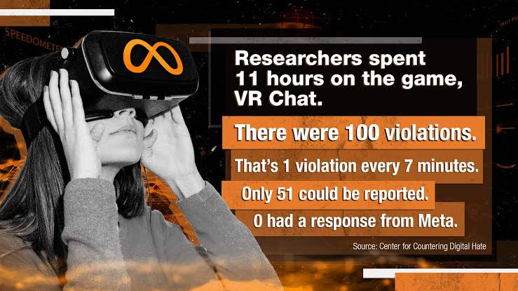
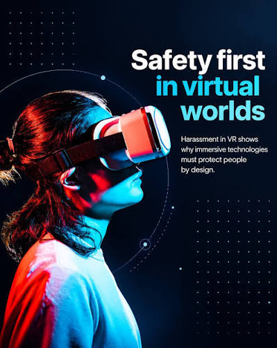
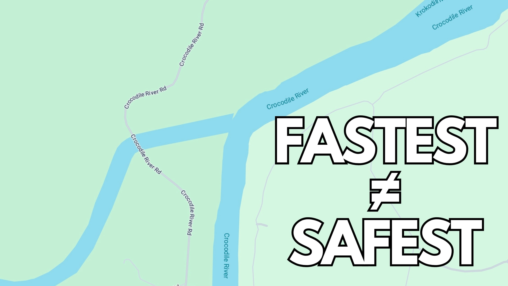
[1] Guardian (2016): https://www.theguardian.com/technology/askjack/2016/apr/21/can-speech-recognition-software-help-prevent-rsi [2] Tatman (2016): https://makingnoiseandhearingthings.com/2016/07/12/googles-speech-recognition-has-a-gender-bias/ [3] Grid Dynamics (2016): http://blog-archive.griddynamics.com/2016/01/automatic-speech-recognition-services.html [4] Mic (2016), VR harassment. [5] UploadVR, “Dealing with harassment in VR.”
11 / 24
Education
Gender roles in education.
Textbooks teach children who is expected to care, cook, earn and lead.
Gender-neutral examples expand what children can imagine for themselves.
Representation in a lesson can shape expectations far beyond the classroom.
13 / 25
Heavy Duty Tools
A standard tool can exclude the person expected to use it.
Tool handles, grips and machinery are often sized around male bodies.[1]
Women’s hands are smaller on average.[1]
The standard brick and load size are also design choices.[1]
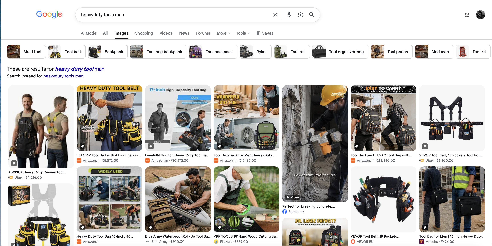
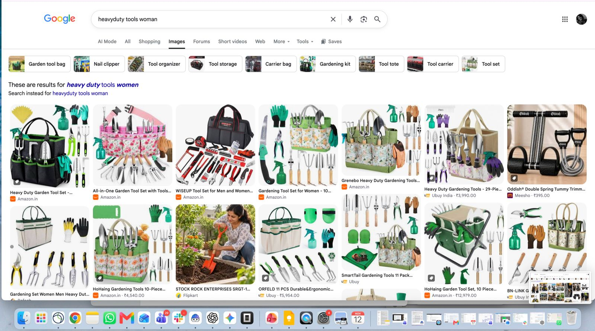
[1] Yoder, Adams & Brensinger (2014), “Designing Tools and Agricultural Equipment for Women,” Women in Agriculture Educators National Conference.
15 / 25
Heavy Duty Tools: Safety Vests
Ill-fitting vests do not provide equal protection.
Vests designed around male proportions can gap at the chest, ride up or shift while moving.[1][2]
Excess bulk can restrict reach, make equipment harder to access and create snag hazards.[1]
A vest that is too large can redistribute weight poorly and increase fatigue over a shift.
“Unisex” is not a substitute for fit testing with women who do the work.[1][2]
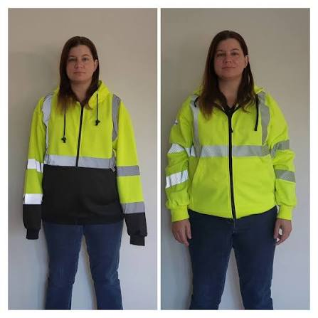
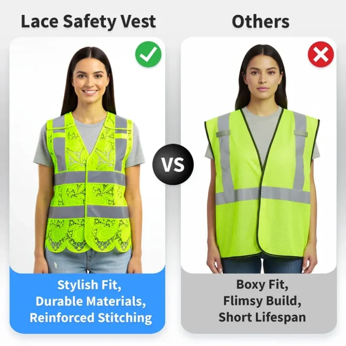
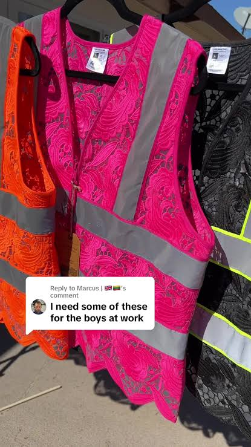
[1] TUC, “Personal protective equipment and women”: https://www.tuc.org.uk/sites/default/files/PPEandwomenguidance.pdf [2] Women’s Engineering Society safety survey (2010): https://www.wes.org.uk/sites/default/files/WES%20safety%20survey%20results%20March%202010.pdf
16 / 25
Defence: TSAS
Where does a system assume the user’s body?
The tactile situation awareness system uses vibrating sensors to orient pilots.[1]
Sensor placement and sensitivity must account for different bodies.[1]
Male pronouns in research can reveal a male default user.[1]
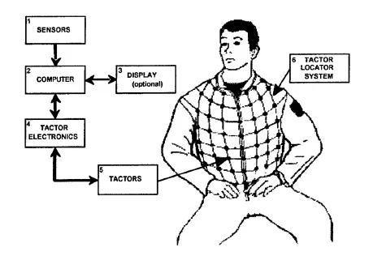
[1] Myles & Binseel (2007), “The Tactile Modality: A Review of Tactile Sensitivity and Human Tactile Interfaces,” Army Research Laboratory.
18 / 25
Healthcare: PPE Kits, Masks and Gloves
Fatal exposure.
During COVID-19, loose, male-pattern PPE created severe safety, health and hygiene challenges for female healthcare workers.[1][2]
Most medical PPE and N95 respirators were sized around male bodies and facial structures, leaving hazardous gaps that exposed workers to pathogens and impaired movement.[1][2]
Full-body coveralls could not be partly removed for the restroom; shortages and long shifts led some women to avoid drinking water or using the bathroom.[1]
Women reported bleeding into protective suits, staining, chafing, rashes and bacterial infections.[1]
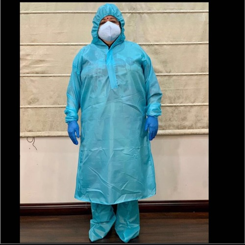
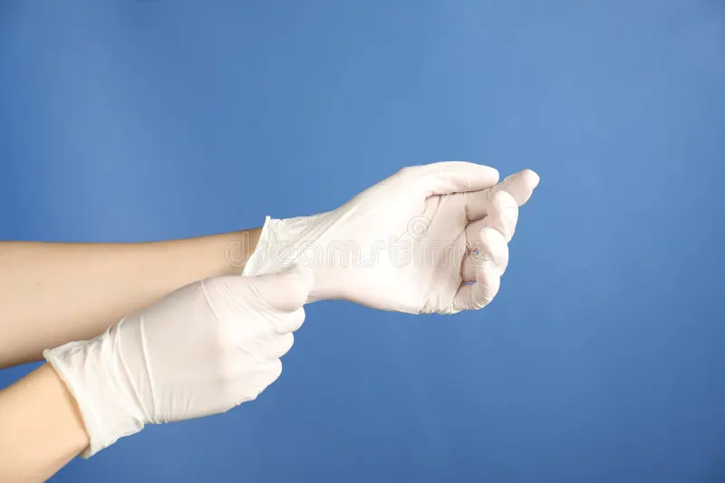
[1] TUC, “Personal protective equipment and women”: https://www.tuc.org.uk/sites/default/files/PPEandwomenguidance.pdf [2] Women’s Engineering Society safety survey (2010): https://www.wes.org.uk/sites/default/files/WES%20safety%20survey%20results%20March%202010.pdf
19 / 25
Healthcare: Heart Attacks and CRT-D
Male symptoms and thresholds are not universal.
Women are more likely to be misdiagnosed following a heart attack.[1]
Symptoms can include nausea, fatigue, breathlessness and stomach pain.[1][2]
CRT-D trial data suggests women could benefit at a lower threshold than guidelines used for men.[3]
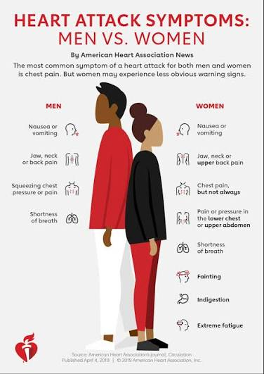
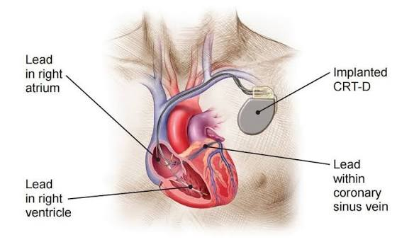
[1] Wu et al. (2016), European Heart Journal 7(2). [2] NYT (2014), “Women’s atypical heart attacks.” [3] Zusterzeel et al. (2014), JAMA Internal Medicine 174(8), 1340-48.
20 / 25
Healthcare: Endometriosis
“Nothing is wrong” can be a data gap speaking.
Endometriosis causes severe pain and can affect fertility.[1]
Average diagnosis takes years: about eight in the UK and ten in the US.[1][2]
Women’s pain is often dismissed or misdirected through the wrong tests.[2]
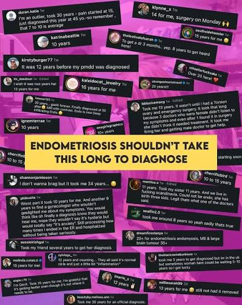
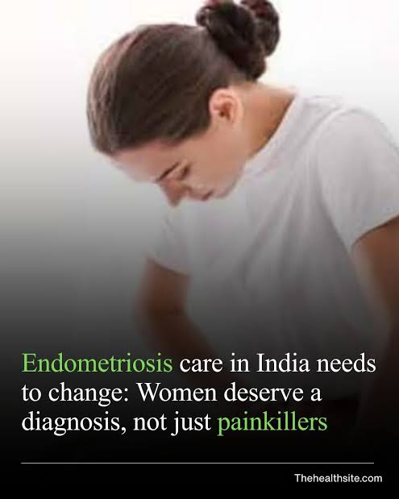
[1] Endometriosis Foundation of America: https://www.endofound.org/endometriosis [2] Guardian (2015), “Endometriosis: the hidden suffering of millions of women.”
21 / 25
Breast Pumps and Investment
Women’s health is not a niche market.
In 2013, Naya Health founder Janica Alvarez reported that investors struggled to take her breast-pump start-up seriously.
Other investors reportedly refused to touch the pump or described it as “disgusting”.
Bias about women’s bodies can determine which practical health technologies receive investment.
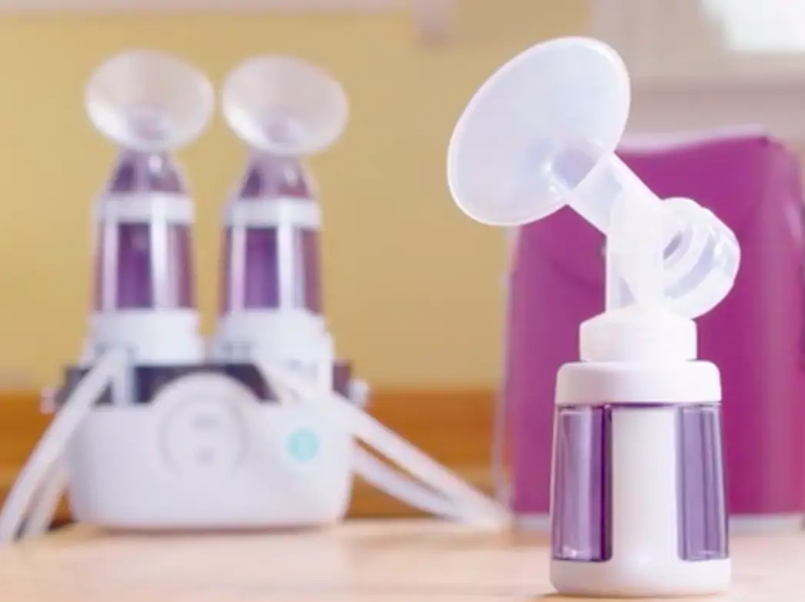
22 / 26
Pink Tax: Product Examples
Same function. Different packaging. Higher price.
Compare equivalent products by unit price.
Look for differences limited to colour, fragrance or gendered marketing.
The pink tax is a pricing pattern, not a formal tax.
23 / 24
Pink Tax: More Examples
Gendered marketing can become a recurring cost.
Razors, toiletries, toys and services are useful like-for-like comparisons.
Ask whether the price difference reflects function or gendered branding.
Local shelf-price checks make the pattern visible.
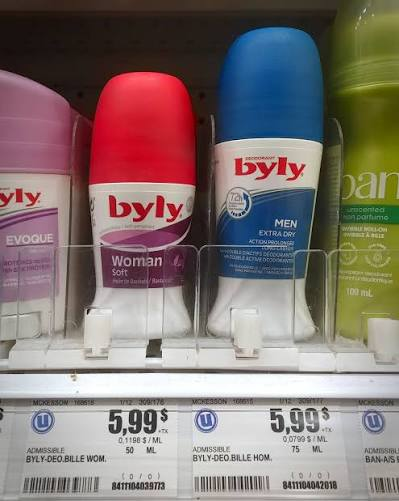
24 / 25
Conclusion
Inclusive design does not need to look different. It needs to work differently.
It is not about making everything pink or purple. It is the thought, intention and understanding behind a product that women can use effortlessly.
Good inclusive design is almost silent. It does not need to announce inclusion. It simply works for the people it is designed to serve.
Closing question
Who is missing from the data, the room and the design?
Collect sex-disaggregated data. Include diverse women in research and decision-making. Test products for real lives, not a presumed default user.
Research notes and source leads: gender-data-gap-talk-notes.md Verify statistics and image licences before public presentation.
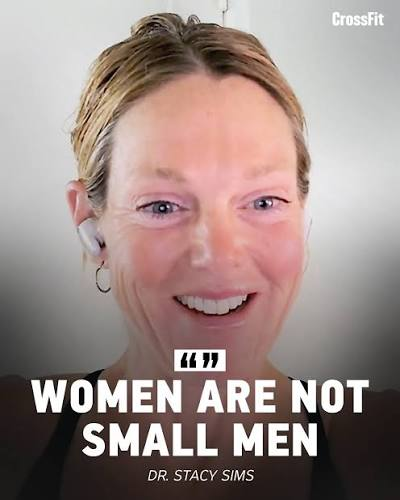
Dr Stacy Sims, PhD Exercise Physiologist and Nutrition Scientist


.jpeg)
.jpeg)


.jpeg)